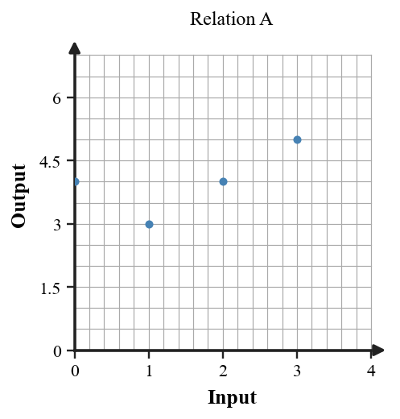
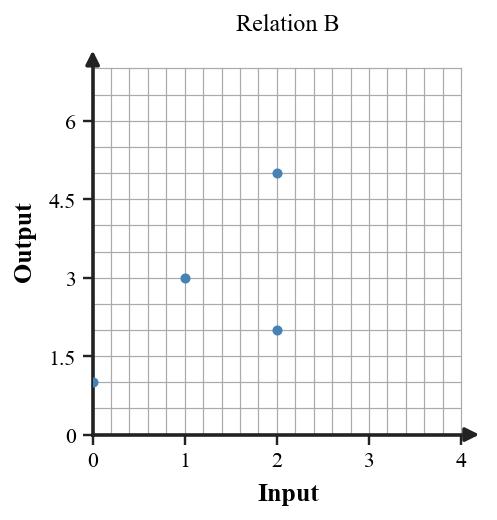

Inputs, Outputs,
and Functions
Mathematical idea: A function is not just an equation. It is a dependable connection between inputs and outputs — one input goes in, one output comes out.
Today we will practice interpreting inputs and outputs, evaluating function rules, comparing rules, and deciding whether a relation behaves like a function.
Learning Target
Students will interpret functions as rules that connect inputs and outputs without relying on formal domain and range language.
I can statements
- I can determine outputs from given inputs.
- I can evaluate a function rule.
- I can identify inputs and outputs in a situation.
- I can describe how a function changes values.
- I can decide whether a rule gives exactly one output for each input.
What's To Come
This is a long-range preview for future lessons. Do not solve it today. Instead, annotate it individually. Circle anything familiar, underline symbols or directions that seem important, and write notes about what information you think will be needed later.
As you annotate, ask yourself: Which rule would you trust most? What evidence is missing? What new input would help test the rules?
Future Task — Competing Rules Investigation
A school app gives students points for completing daily math practice. The table shows the points for the first few days.
| Day ($d$) | 0 | 1 | 2 |
|---|---|---|---|
| Total points ($P$) | 2 | 5 | 8 |
Three students propose possible rules.
Student A
The rule is $P=3d+2$ because the points increase by 3 each day.
Student B
The app adds 3 points most days, but gives a hidden bonus after several days.
Student C
The app uses a rule that matches the first three outputs but changes later.
Unknown
The outputs for days 3, 4, and 5 are hidden.
- Circle the evidence that all three students might use to support their rule.
- Underline one part that makes it impossible to decide which rule is correct today.
- Write one new input you would test and explain what output would help you choose between the three rules — and what output would force you to reject at least one of them.
Intro
Directions
Read the introduction aloud with a partner or in a small group. As you read, annotate the text by highlighting important ideas, circling key vocabulary, and writing short notes about connections, questions, or predictions in the margins.
A function is a special kind of relationship. It connects each input to exactly one output. You can think of a function like a machine: a value goes in, the rule does something to it, and one value comes out.
Inputs and outputs can come from many situations. If the input is the number of hours worked, the output might be total pay. If the input is the number of tickets bought, the output might be total cost. If the input is the day of a challenge, the output might be total points earned.
A function rule can be shown with words, a table, a graph, or notation like $f(x)$. The notation $f(x)$ does not mean multiply $f$ by $x$. It means "the output of the function when the input is $x$."
When we study functions, we ask careful questions. What is the input? What is the output? What does the rule do? Does each input have exactly one output? What does the output mean in the real situation?
Stop and Discuss
- The reading describes a function like a machine. According to the text, what are the three parts of that machine?
- The reading explains what $f(x)$ means. Find the sentence that defines it and read it aloud. What does $f(x)$ not mean?
- The reading says a function connects each input to exactly one output. Why would it create a problem if one input could produce two different outputs?
Functions Connect Inputs and Outputs
A function rule connects an input to an output.
Input
The value that goes into the function. It is often the number you choose or are given.
Rule
The process that changes the input into an output.
Output
The value that comes out after the rule is applied.
Function
A relationship where each input has exactly one output.

Example 1: Interpret a Function Machine
A weekend bike rental shop charges a one-time helmet fee of $6 and then $4 for each hour a bike is rented.
The input is the number of rental hours, $h$. The output is the total cost, $C$.
Student claim: "The rule adds 6."
- Why is the student's claim incomplete? What information does it leave out?
- What happens to the input before the 6 is added? Explain why that step matters — what would go wrong if you skipped it?
- Find the output when the input is 3 hours. Explain what your answer means in the bike rental situation, using the word "total."
You Try It 1: Predict an Output from Evidence
A mystery function machine produces these input-output pairs.
| Input | 1 | 2 | 4 | 5 |
|---|---|---|---|---|
| Output | 7 | 9 | 13 | ? |
- What pattern do you notice between the inputs and outputs?
- Predict the output when the input is 5. Explain the evidence you used.
- What additional input-output pair would make you more confident that your rule is correct?
Function notation is a compact way to name a rule and its output.
- $f(x)$ means the output of function $f$ when the input is $x$.
- If $f(x)=2x+5$, then $f(3)$ means use input 3 in the rule.
- $f(3)=11$ means when the input is 3, the output is 11.
Important: $f(x)$ does not mean multiplying $f$ times $x$. The letter $f$ is the name of the function.
Example 2: Compare Two Function Rules
Two school clubs use different point rules for a reading challenge.
Club A: $A(b)=2b+7$ Club B: $B(b)=5b+1$
- Evaluate both rules for $b=0$, $b=1$, and $b=3$.
- Which club starts with more points when $b=0$? At $b=3$, which club has more? Without calculating every value, estimate the book count $b$ where the two clubs would have equal points. Explain your reasoning.
- Explain why comparing only one input value might lead to a wrong conclusion about which club is "better."
You Try It 2: Critique a Conclusion About Two Rules
Two game apps award coins using these rules.
App H: $H(x)=4x-2$ App K: $K(x)=x+8$
Student claim: "App K is always better because it gives more coins when $x=0$ and when $x=2$."
- Test the claim using one input greater than 2. Show the output from each app.
- Is the word "always" justified? Explain what your test shows and what it does not prove.
- Write a revised claim that compares the two apps more carefully using input-output language.
Stop and Discuss
Can two different function rules produce the same output for one input? If that happens, does it prove the rules are the same function? Explain.
A relationship is a function if each input has exactly one output.
- Repeated outputs are allowed. Different inputs can lead to the same output.
- Repeated inputs with different outputs are not allowed. One input cannot lead to two different outputs.
- When deciding, focus on the inputs first.
Example 3: Critique a Function Claim
A student looks at Relation A and says, "This is not a function because the output 4 repeats."

- Read the input values of all four points from the graph. List them. Do any inputs repeat?
- For each input, identify its output. Does any single input lead to more than one output? How do you know?
- Do you agree or disagree with the student's claim? Use specific input-output evidence from the graph — do not just name the rule.
You Try It 3: Explain Whether the Relation Is a Function
Use Relation B.

- Read all the input values from the graph. List them. Do you see any input value that appears more than once? What makes it hard or easy to tell?
- For the input you identified, how many different outputs are there? How do you know from the graph?
- Is Relation B a function? Use the phrase "each input has exactly one output" in your explanation, and name the specific input that you checked.
In a real situation, inputs and outputs have meaning.
- The input tells what value you choose or measure first.
- The output tells what value the rule produces.
- An ordered pair like $(3,18)$ means: when the input is 3, the output is 18.
- A rule should make sense with the units and context.
Context sentence frame: In this situation, the input represents __________ and the output represents __________.
Example 4: Apply a Function in Context
A library reading program gives each student 12 starter points and 4 more points for each book read.
The function rule is $P(b)=12+4b$.
- What does the input $b$ represent? What does the output $P(b)$ represent?
- Find $P(0)$ and explain what it means in the situation. Why does the program give points even before a student reads any books?
- Find $P(5)$ and explain what the ordered pair $(5,32)$ means in the context of the program.
- How does the output change each time the input increases by 1? A student wants to reach 60 points. Without solving an equation, estimate how many books that would take. Explain your reasoning.
You Try It 4: Build a Function Model
Create a simple real-world situation that could be represented by a function. Your situation should have a starting value and a constant change for each input.
- Write a short context. Clearly name the input and output quantities.
- Write a function rule using notation such as $f(x)$, $C(t)$, or another meaningful name.
- Create at least three input-output pairs from your rule.
- Explain why your rule gives exactly one output for each input.
Summary
A function connects each input to exactly one output. Inputs, outputs, and rules can be shown with words, tables, graphs, equations, or function notation.
Function notation such as $f(x)$ means "the output of function $f$ when the input is $x$." It does not mean multiplication.
To decide whether a relationship is a function, focus on the inputs. Repeated outputs are okay, but one input cannot have two different outputs.
In context, function rules are strongest when we can explain what the input means, what the output means, and how the output changes as the input changes.
Common Mistakes
- Reversing input and output. Why it is tempting: both values appear together in an ordered pair or table. What to check instead: ask which quantity is chosen first and which quantity depends on it.
- Thinking repeated outputs mean "not a function." Why it is tempting: repeated values look like a problem. What to check instead: repeated outputs are allowed; repeated inputs with different outputs are not.
- Treating $f(x)$ like multiplication. Why it is tempting: parentheses often mean multiplication in other settings. What to check instead: read $f(x)$ as "the output of function $f$ at input $x$."
- Checking outputs first. Why it is tempting: outputs are often the numbers we want. What to check instead: function status depends on whether each input has exactly one output.
- Describing a rule with only one example. Why it is tempting: one input-output pair may feel convincing. What to check instead: a function rule must describe the pattern for every input in the situation.
Optional Future Task Reflection
Look back at the future task. Do not solve it yet. Highlight one part that makes more sense now than it did at the beginning. Circle one part that still feels unfamiliar. Write one sentence about what representation you would look at first.